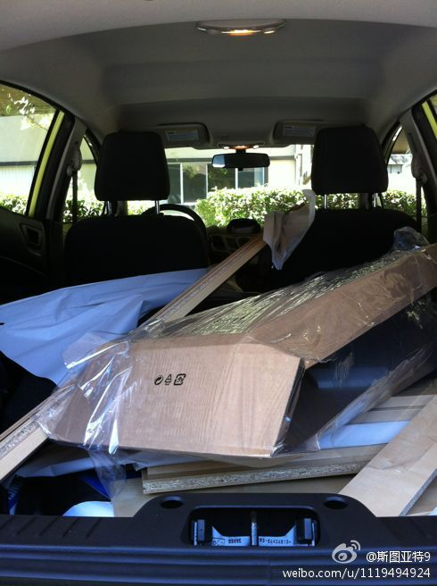

夏天了，实习生纷纷到来，新来了很多及其年轻的面孔。89年出生的研究生和92年出生的本科生，第一感觉是好像差不多大。再转念一想，不对，一个20岁，一个23岁，在学生时代，3岁那是很大的差别阿。但一旦和他们年龄上有了距离，似乎都感觉不出他们的差别了。

斯图亚特9
2012-06-02
斯图亚特9
2012-06-02
小区租房办公室（Leasing Office）门口布置得极其豪华。小走廊、藤蔓、各种花卉，还有个小喷水池。一看就是专门装点门面来促销的小伎俩。想想我们的房租每个月都有一部分用来跟这个，感觉有点不爽。
斯图亚特9
2012-06-02
买书控四年的第四个书架。每一个都是宜家的类似型号，每一个都是这么硬塞到车里。这一次做得驾轻就熟。
- 